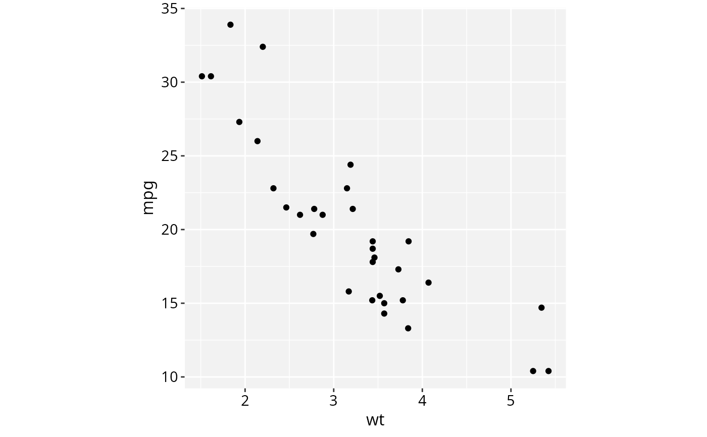
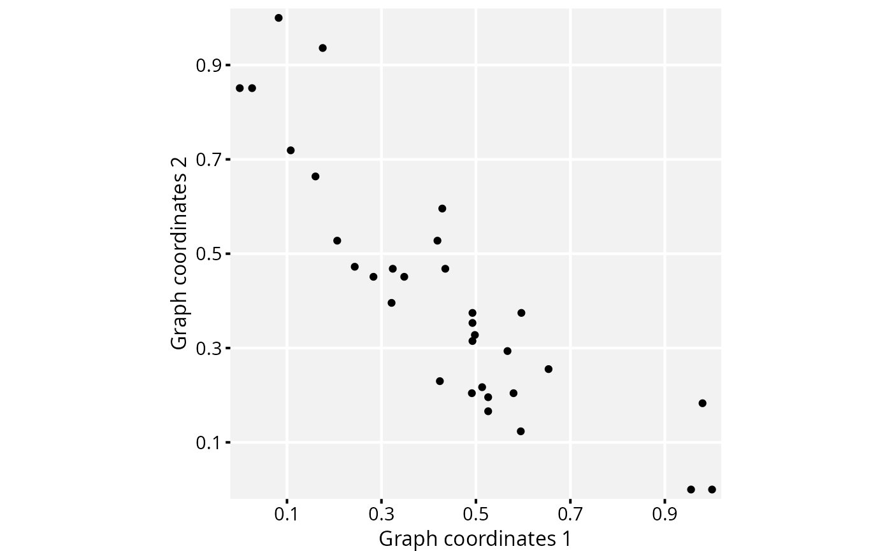
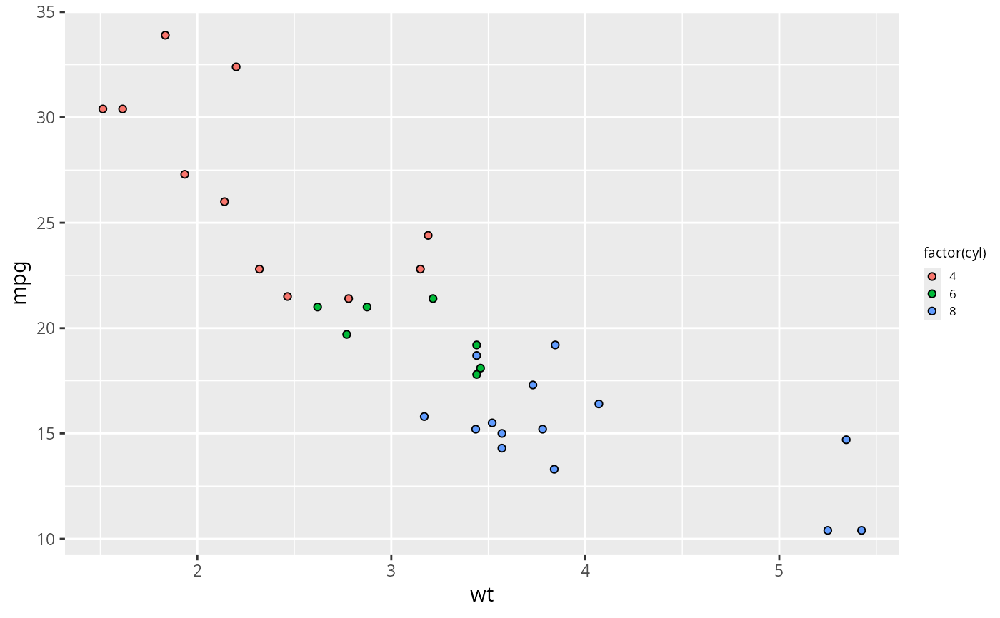

A set of ggplot2 themes used by RGraphSpace plots.
Usage
theme_gspace_th0(
txt_size = 1,
leg_size = 1,
bg_colour = "grey95",
discrete_fill = FALSE,
discrete_colour = FALSE,
...
)
theme_gspace_th1(
txt_size = 1,
leg_size = 1,
bg_colour = "grey95",
discrete_fill = FALSE,
discrete_colour = FALSE,
...
)
theme_gspace_th2(
txt_size = 1,
leg_size = 1,
bg_colour = "grey95",
discrete_fill = FALSE,
discrete_colour = FALSE,
...
)
theme_gspace_th3(
txt_size = 1,
leg_size = 1,
bg_colour = "grey95",
discrete_fill = FALSE,
discrete_colour = FALSE,
...
)
theme_gspace_coords(
theme = "th0",
is_norm = FALSE,
xlab = "Graph coordinates 1",
ylab = "Graph coordinates 2",
expand = NULL,
...
)
theme_gspace_legend(
leg_size = 1,
discrete_fill = FALSE,
discrete_colour = FALSE,
...
)Arguments
- txt_size
Numeric value to scale plot- and axis-related text elements.
- leg_size
Numeric value to scale legend-related elements.
- bg_colour
A color name or hex code specifying the panel background.
- discrete_fill
Logical; if TRUE, treats the fill legend as discrete to adjust key size.
- discrete_colour
Logical; if TRUE, treats the colour legend as discrete to adjust key size.
- ...
Additional arguments passed to
theme_gspace_th*and ggtheme.- theme
Character string specifying the GraphSpace theme variant. Options:
th0,th1,th2, andth3.- is_norm
Logical; if TRUE, assumes plot coordinates are already normalized in
[0, 1].- xlab
The title for the 'x' axis.
- ylab
The title for the 'y' axis.
- expand
A range expansion factor applied to both the lower and upper limits of the 'x' and 'y' scales.
Value
theme_gspace_th*() return a ggplot2 theme object.
theme_gspace_coords() returns a list containing scale and theme
components that can be added to a ggplot2 plot.
theme_gspace_legend() returns a list of theme and guide components.
Details
theme_gspace_th0() is a minimal wrapper around
theme_gray that simplifies axis and legend scaling.
The txt_size and leg_size arguments aggregate related
theme parameters for quick thematic overrides.
theme_gspace_th1() builds on theme_gspace_th0() and
modifies grid lines, axis appearance, and panel borders.
theme_gspace_th2() is similar to theme_gspace_th1() with
simplified grid elements and a customizable panel background.
theme_gspace_th3() is similar to theme_gspace_th2() but with
slightly adjusted margins, tick appearance, and legend formatting.
The theme_gspace_coords() is a helper function that also adds axes
scales for normalized coordinates. It configures axis breaks, limits,
and expansion for graph layouts. Plot coordinates are ideally normalized
to the interval [0, 1].
theme_gspace_legend() is helper function that adjusts legend text,
title, and key sizes by a single scaling factor.
See also
ggtheme, theme
Examples
library(RGraphSpace)
library(ggplot2)
ggplot(mtcars, aes(wt, mpg)) +
geom_point() +
theme_gspace_th0()

ggplot(mtcars,
aes(scales::rescale(wt),
scales::rescale(mpg))) +
geom_point() +
theme_gspace_coords("th2", is_norm = TRUE)

# Reduce legend element sizes
ggplot(mtcars, aes(wt, mpg, fill = factor(cyl))) +
geom_point(shape = 21) +
theme_gspace_legend(0.8)
